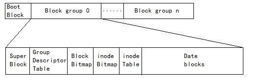
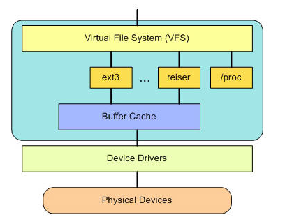

机械硬盘的物理存储机制
一个硬盘有多张盘片叠成，不同盘片有编号
每张盘片上的存储颗粒成环形一圈圈地排布，每一圈称为磁道，有编号
每条磁道上都有一圈存储颗粒，每512*8（512字节，0.5KB）个存储颗粒作为一个扇区，扇区是硬盘上存储的最小物理单位
N个扇区可以组成簇，N取决于不同的文件系统或是文件系统的配置，簇是此文件系统中的最小存储单位
所有盘面上的同一磁道构成一个圆柱，称为柱面，柱面是系统分区的最小单位
磁盘分区
硬盘分区本质是硬盘这个物理概念转换成区这个逻辑概念，为下一步格式化做准备。
第一扇区有硬盘主引导记录及分区表， MBR扇区由引导代码(446bytes)、MBR分区表(64bytes)、MBR结束标志(2bytes)3部分构成，一共占用512bytes。MBR放有最基本的引导加载程序，是系统开机启动的关键环节，而分区表则跟分区有关，它记录了硬盘分区的相关信息，分区表仅有64bytes，最多只能记彔四块分区（分区其实就是对分区表进行设置），也可以设置成主分区+逻辑分区，这时也是最多4个分区号码，但是变成了4 = 3 + 1其中4是主分区和扩展分区加起来最多4个，3是主分区，1是扩展分区，占用了一个主分区号，从5开始都是逻辑分区。扩展分区的磁盘总量等于一个逻辑分区的磁盘总量。本质是利用额外的扇区来记录更多的分区信息。扩展分区不同于主分区，它本身并没有内容，它是为进一步逻辑分区提供空间的，只是逻辑概念，本身不能被访问，也就是不能被格式化后作为数据访问的分区，能够作为数据访问的分区只有主分区和逻辑分区
最好单独分一个swap区，当有数据被存放在物理内存里面，但是这些数据又不是常被CPU所取用时，那么这些不常被使用的程序将会被丢到硬盘的swap置换空间当中，而将速度较快的物理内存空间释放出来给真正需要的程序使用
ext2文件系统

Boot Block: 这个启动扇区可以安装开机管理程序， 这个设计让我们能将不同的引导装载程序安装到个别的文件系统前端，而不用覆盖整个硬盘唯一的MBR， 也就是这样才能实现多重引导的功能
Block group: ext2文件系统会根据分区的大小划分为数个Block Group
Super Block: 存放文件系统本身的结构信息，一般大小为1024bytes。记录的信息主要有: bolck 和 inode的总量，未使用的block和inode的数量，是否被挂载，一个block(1k|2k|4k mke2fs -b可以设置)，和inode(128bytes)的大小，最近一次挂载的时间，最近一次写入数据的时间，最近一次检验磁盘的时间等其他文件系统的相关信息。Super Block的信息被破坏，可以说整个文件系统结构就被破坏了
Group Descriptor Table: 块组描述符，描述块组属性信息，这个区段可以描述每个block group的开始与结束的block号码，以及说明每个区段分别介于哪一个block号码之间
Block Bitmp: 记录着Data Block中哪个数据块已经被占用，哪个数据块没有被占用
inode Bitmap: 每个bit表示一个inode是否空闲可用
inode Table: 存放文件属性 如文件大小/权限/所有者，数据地址，最近修改时间等(ls -i可查看)
Date blocks：存放文件内容
创建一个新文件主要有以下几个操作：
- 存储属性，内核通过inode Bitmap找到一个空闲的inode节点
- 存储数据，内核通过Block Bitmap找到了n个空闲块，将内核缓冲区的数据复制到块中
- 记录分配情况，内核在inode Table记录块列表等信息
- 添加文件名到目录，内核将入口（inode，filename等信息）添加到目录文件的block中，文件名和inode之间的对应关系将文件名和文件的内容及属性连接起来
- 所以文件名的记录是在目录的block当中，「新增/删除/更名文件名」与目录的w权限有关
- stat file_name命令可查看这些信息
inode直接/间接区
inode要记录的资料非常多，却只有128bytes，因为inode记录block 号码的区域定义为12个直接，一个间接，一个双间接与一个三间接记录区
直接记录：里面有12个直接指向block号码的对照，这12条记录就能够直接取得block号码
间接记录：再拿一个block来当作记录block号码的记录区，如果文件太大时，就会使用间接的block来记录号码。同理，如果文件持续长大，那么就会利用所谓的双间接，第一个block仅再指出下一个记录号码的block在哪里，实际记录的在第二个block当中。依此类推，三间接就是利用第三层block来记录号码
12个直接指向： 12 * 1K = 12K
间接： 256 * 1K = 256K，block号码的记录占4bytes，因此1K的大小能够记录256笔记录
双间接： 256 * 256k = 64M，第一层block会指定256个间接
三间接：256 * 64M = 16G，第一层block会指定256个双间接
vfs
在一个区被格式化为一个文件系统之后，它就可以被Linux操作系统使用了，只是这个时候Linux操作系统还找不到它，所以我们还需要把这个文件系统注册进Linux操作系统的文件体系里，这个操作就叫挂载，把对不同文件系统的访问交给了VFS（虚拟文件系统），VFS能访问和管理各种不同的文件系，每个文件系统实现（比如 ext2、JFS 等等）导出一组通用接口，供 VFS 使用
